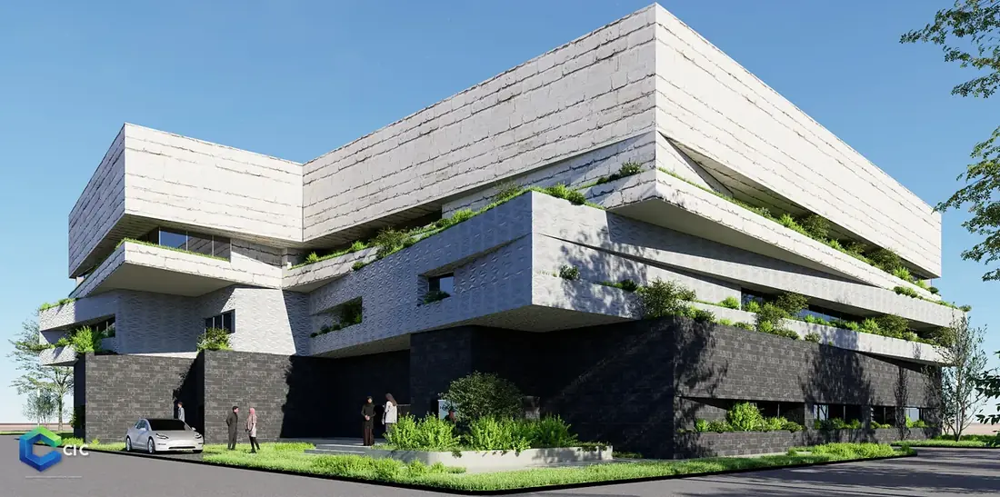
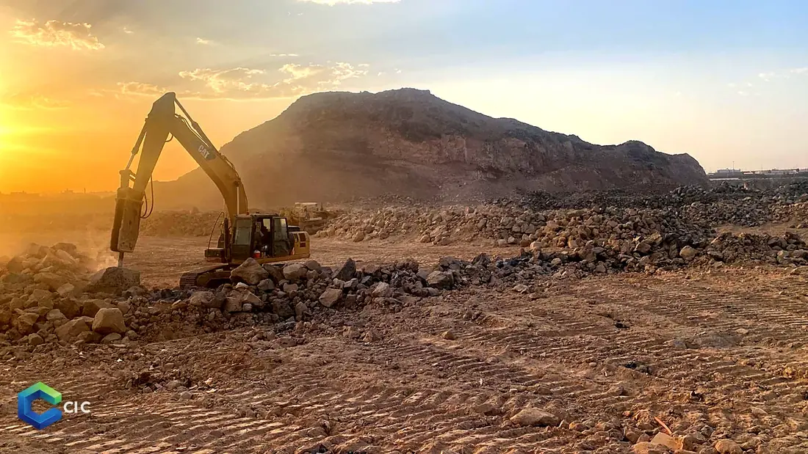
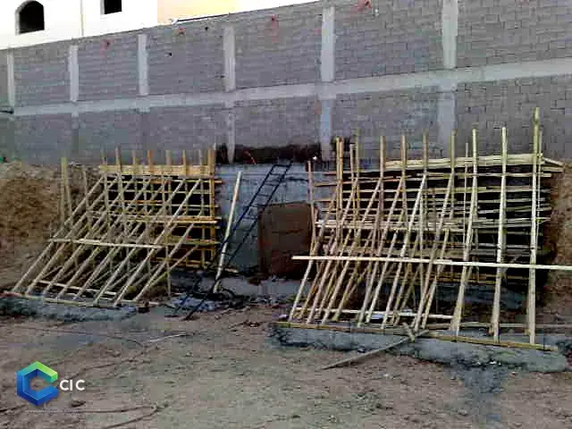
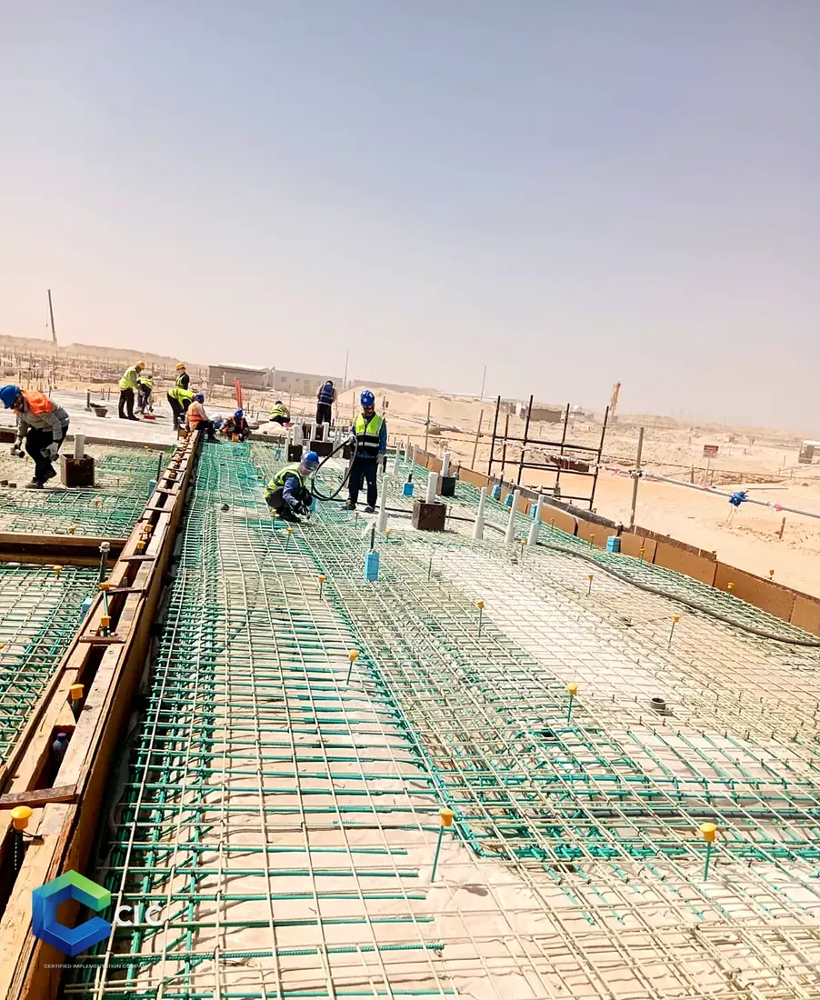

2025أعمال مدنية
مشروع الزراعة العمودية — وزارة البيئة والمياه والزراعة
أعمال إنشائية كاملة لمبنى زراعة عمودية متعدد الأدوار: حفر وأساسات وهيكل خرساني وبلاطات. قيد التنفيذ.
01 · مقاولات عامة · تغطية شاملة لمناطق المملكة
هياكل خرسانية تُبنى لتدوم.
ننفّذ الأعمال المدنية وأعمال بناء العظم بدءاً من تجهيز الموقع والحفر وصب الأساسات، وحتى اكتمال الهيكل الخرساني المسلح. يعمل فريقنا تحت إشراف هندسي مباشر ونقاط فحص جودة مرحلية تضمن مطابقة التنفيذ لأدق تفاصيل المخططات والمواصفات السعودية.

2025أعمال إنشائية كاملة لمبنى زراعة عمودية متعدد الأدوار: حفر وأساسات وهيكل خرساني وبلاطات. قيد التنفيذ.
 2025
2025تنفيذ أعمال الهدم الآمن والحفر العميق بعمق 8 أمتار لتجهيز موقع إنشاء مشروع فندقي.
 2025
2025أعمال الهدم الانتقائي والحفر والترحيل الميداني تمهيداً لإعادة تأهيل المبنى المدرسي وترميمه.

2023إزالة مخلفات البناء والهدم ونواتج الحفر والصبات الخرسانية.

2022سند حفرية خرساني على مراحل لحماية سور الجار.

2022الأعمال الإنشائية من الأساسات حتى البلاطة وجميع الأعمال الخرسانية.
نعاين الموقع على الطبيعة، ونراجع المخططات والمتطلبات، ونقيّم الظروف الفنية الفعلية بدقة قبل التسعير.
نقدّم عرضاً مفصّلاً يوضّح البنود والكميات والمواصفات والجدول الزمني بدقة، دون أي تكاليف مخفية.
تباشر فرقنا الميدانية العمل تحت إشراف هندسي مستمر، مع تزويدك بتقارير تقدّم دورية موثّقة بالصور.
نسلّم المشروع مطابقاً للمواصفات المتفق عليها، ونواصل المتابعة الفنية بعد التسليم للاطمئنان على سلامة التشغيل وكفاءته.
نعم، هدمنا مركزاً تجارياً وحفرنا موقعه بعمق 8 أمتار لإنشاء فندق، مع سند جوانب الحفر لحماية المباني المجاورة.
نعم، ننفذ الأعمال الإنشائية من الأساسات حتى البلاطات، بما فيها جميع الأعمال الخرسانية.
نعم، ننفّذ بناء العظم كاملاً: الحفر، والقواعد والأساسات، والأعمدة، والأسقف والبلاطات، وجميع الأعمال الخرسانية.
يشمل عادةً تجهيز الموقع والحفر، وصب النظافة والقواعد والأساسات، والرقاب والميد، والأعمدة والجدران الخرسانية، والبلاطات والأسقف حتى اكتمال الهيكل الخرساني المسلح، مع أعمال الردم والدك. ونحدّد النطاق النهائي بنداً بنداً في العرض الفني والمالي وفق مخططات مشروعك.
مقاولات عامة · تغطية شاملة لمناطق المملكة
قول لنا نوع المشروع ومكانه، ونرتّب لك معاينة فنية في الموقع وعرض سعر مفصّل بالبنود والكميات، من غير أي تكاليف مخفية.
فريقنا جاهز يرد على أسئلتك ويرتّب معاينة لموقعك في أي مكان في المملكة. ابعت لنا على واتساب علشان الرد يكون أسرع، أو سيب بياناتك في النموذج وهنكلمك في أقرب وقت.